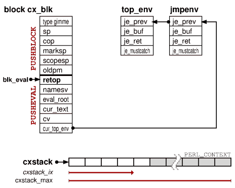

eval

Pack the op sequence into a simple try/catch switch between JMPENV_PUSH and
JMPENV_POP calls.
The struct jmpenv packages the state required to perform a proper non-local jump,
top_env being the initial JMPENV record. In case of abnormal exceptions
(i.e. die) a JMPENV_JUMP must be done, a non-local jump out to
the previous JMPENV level with a proper setjmp record.
|